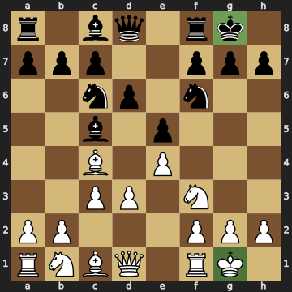
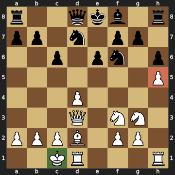
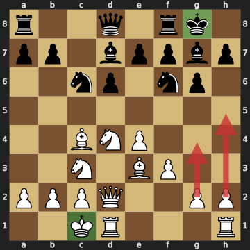
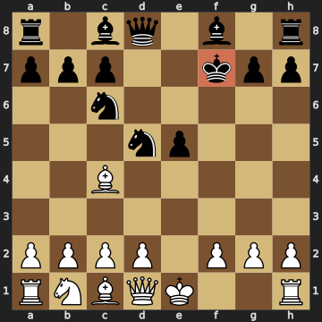

キャスリングは、キングを安全な場所に移しながら、ルークを戦いに参加させられる特別な一手です。チェスにはキングサイド（O-O）とクイーンサイド（O-O-O）の2種類のキャスリングがありますが、「どちらを選べばいいの？」と迷う方も多いはずです。この記事では、それぞれの長所と短所、判断するときに見るポイント、よくある失敗を、実際のオープニングの盤面を使って解説します。
キングサイドのキャスリングでは、白のキングはe1からg1へ、h1のルークはf1へ移ります。クイーンサイドのキャスリングでは、白のキングはe1からc1へ、a1のルークはd1へ移ります。黒も同じように、8段目で行います。
キャスリングができるのは、次の条件をすべて満たしているときだけです。
ルークが通るマスは、相手に利かされていてもかまいません。たとえば白のクイーンサイドのキャスリングでは、ルークが通るb1のマスが相手に利かされていても、キャスリングできます。
実戦では、キングサイドのキャスリングがいちばんよく使われます。理由は大きく2つあります。
1つ目は、早くできることです。白がキングサイドにキャスリングするには、間にいるf1のビショップとg1のナイトの2つを動かすだけで済みます。クイーンサイドでは、b1のナイト、c1のビショップ、d1のクイーンの3つを動かす必要があります。
2つ目は、キングが守りやすいことです。キングサイドにキャスリングしたキングはg1の隅に入り、f2・g2・h2のポーンが前の壁になります。キングのすぐそばに守りの駒が集まるので、相手に攻められにくくなります。

上の図はイタリアン・ゲームの一例です。白も黒も、ナイトとビショップを1つずつ出したあと、6手目でキングサイドにキャスリングしています。どちらのキングもポーンの壁の後ろに入り、ルークもf列に出てきました。
クイーンサイドのキャスリングは準備に時間がかかりますが、キングサイドにはない長所があります。
ルークがすぐに中央で働きます。クイーンサイドにキャスリングすると、白のルークはd1に入ります。d列は盤の中央の列なので、キャスリングした瞬間から、ルークが相手の陣地や中央のポーンに圧力をかけられます。
キングサイドのポーンを攻めに使えます。キングをクイーンサイドに逃がしておけば、白はキングサイドのgやhのポーンを前に進めても、自分のキングが危なくなりません。

上の図はカロ・カン・ディフェンスの本線です。白はhのポーンをh5まで進めているので、キングサイドにキャスリングすると、キングの前の壁が薄くなってしまいます。そこで白は、クイーンサイドにキャスリングして、キングを反対側に置きました。
ただし、クイーンサイドのキャスリングには弱点もあります。白のキングがc1に入ると、a2のポーンはキングに守られていない状態になります。そのため白は、あとでKb1と一手かけて、キングを隅に寄せることがよくあります。
白と黒が反対側にキャスリングすると、局面は一気に激しくなります。お互いに、相手のキングがいる側のポーンを前に進めても、自分のキングが危なくならないからです。

上の図は、シシリアン・ディフェンスのドラゴン・バリエーションに対するユーゴスラフ・アタックです。白はクイーンサイドに、黒はキングサイドにキャスリングしています。白は矢印のように、h4・h5やg4とキングサイドのポーンを進めて、黒のキングの前の列をこじ開けにいきます。白はBh6でg7のビショップを交換して、黒のキングの守りを弱める作戦もよく使います。
一方の黒は、c列やクイーンサイドの駒を使って、白のキングに反撃します。反対側にキャスリングした局面では、どちらの攻めが先に届くかの速さ比べになるので、一手のむだが勝敗を分けます。
迷ったときは、まずキングサイドを考えてみるのがおすすめです。そのうえで、上のポイントのどれかがクイーンサイドを指しているときに、クイーンサイドを選ぶとよいでしょう。
失敗① キャスリングを後回しにして、権利をなくしてしまう

上の図はフライド・リバー・アタックです。黒はKxf7とキングで取り返したので、キングが一度動いたことになります。キングが一度でも動くと、そのあとはキャスリングができません。黒のキングは安全な隅に入れないまま、白の攻撃を受け続けることになります。
失敗② キャスリングしたあとに、キングの前のポーンを突いてしまう
キャスリングしたあとに、キングの前のgやhのポーンをむやみに進めると、せっかくの壁にすき間ができてしまいます。キングの前のポーンは、はっきりした理由があるときだけ動かしましょう。
失敗③ 相手の攻めが集まっている側にキャスリングする
相手の駒がすでに狙っている側にキャスリングすると、キングが自分から危険な場所に入ることになります。キャスリングの前に、相手の駒がどこを向いているかを確かめましょう。
ふだんはキングサイドのキャスリングが基本で、早くできて、キングも守りやすいのが長所です。クイーンサイドのキャスリングは、ルークをすぐ中央で働かせたいときや、キングサイドのポーンで攻めたいときに選びます。どちらにするか迷ったら、ポーンの壁、相手の狙い、自分の攻めたい側、キャスリングまでの手数の4つを見て判断しましょう。
Castling is a special move that tucks your king into safety while bringing a rook into the game. There are two kinds of castling — kingside (O-O) and queenside (O-O-O) — and many players wonder which one to choose. This article explains the strengths and weaknesses of each, the points to check when deciding, and common mistakes, using positions from real openings.
When White castles kingside, the king moves from e1 to g1 and the h1 rook moves to f1. When White castles queenside, the king moves from e1 to c1 and the a1 rook moves to d1. Black castles the same way on the 8th rank.
You can castle only when all of the following are true:
The squares the rook passes over may be attacked. For example, White can still castle queenside even if the b1 square, which only the rook crosses, is attacked.
In practice, kingside castling is by far the most common. There are two main reasons.
First, it is fast. To castle kingside, White only needs to move the two pieces in the way: the f1 bishop and the g1 knight. To castle queenside, White has to move three pieces: the b1 knight, the c1 bishop, and the d1 queen.
Second, the king is easier to defend. After kingside castling, the king sits in the g1 corner behind the f2, g2, and h2 pawns, which act as a shield. With defenders gathered close to the king, it is harder for the opponent to attack.
The diagram above shows a line from the Italian Game. White and Black each develop a knight and a bishop, then both castle kingside on move 6. Both kings are now behind their pawn shields, and the rooks have arrived on the f-file.
Queenside castling takes longer to prepare, but it has strengths that kingside castling does not.
The rook goes to work in the center right away. After queenside castling, White's rook lands on d1. The d-file is a central file, so from the moment White castles, the rook can put pressure on the center and on the opponent's position.
The kingside pawns are free to attack. With the king safely on the queenside, White can push the g- and h-pawns forward without exposing the king.
The diagram above shows the main line of the Caro-Kann Defense. White has already pushed the h-pawn to h5, so castling kingside would leave the king behind a thinned-out shield. That is why White castles queenside and places the king on the other side.
Queenside castling has a weakness too. With White's king on c1, the a2 pawn is not protected by the king. For this reason, White often spends a move later on Kb1 to tuck the king into the corner.
When White and Black castle on opposite sides, the game becomes sharp very quickly. Each side can push the pawns on the side where the enemy king lives without weakening their own king.
The diagram above shows the Yugoslav Attack against the Sicilian Dragon Variation. White has castled queenside and Black has castled kingside. As the arrows show, White pushes the kingside pawns with h4, h5, and g4 to pry open the files in front of Black's king. White also often plays Bh6 to trade off Black's g7 bishop and weaken the defense around Black's king.
Black, for their part, counterattacks White's king using the c-file and the queenside pieces. In opposite-side castling positions, the game becomes a race to see whose attack lands first, so a single wasted move can decide the result.
When in doubt, start by considering kingside castling. Then choose queenside castling when one of the points above clearly favors it.
Mistake 1: Delaying castling and losing the right to castle
The diagram above shows the Fried Liver Attack. Black recaptured with Kxf7, so Black's king has now moved. Once the king has moved even once, castling is no longer allowed. Black's king can never reach the safety of the corner and has to keep facing White's attack.
Mistake 2: Pushing the pawns in front of your king after castling
If you push the g- or h-pawn in front of your castled king without a reason, you create gaps in the very shield that protects it. Move those pawns only when you have a clear purpose.
Mistake 3: Castling into the opponent's attack
If you castle on the side the enemy pieces are already aiming at, your king walks straight into danger. Before castling, check where the opponent's pieces are pointing.
Kingside castling is the default: it is fast, and the king is easy to defend. Queenside castling is the choice when you want your rook working in the center right away, or when you want to attack with your kingside pawns. When you can't decide, look at four things — your pawn shield, the opponent's targets, the side you want to attack, and how many moves it takes to castle.